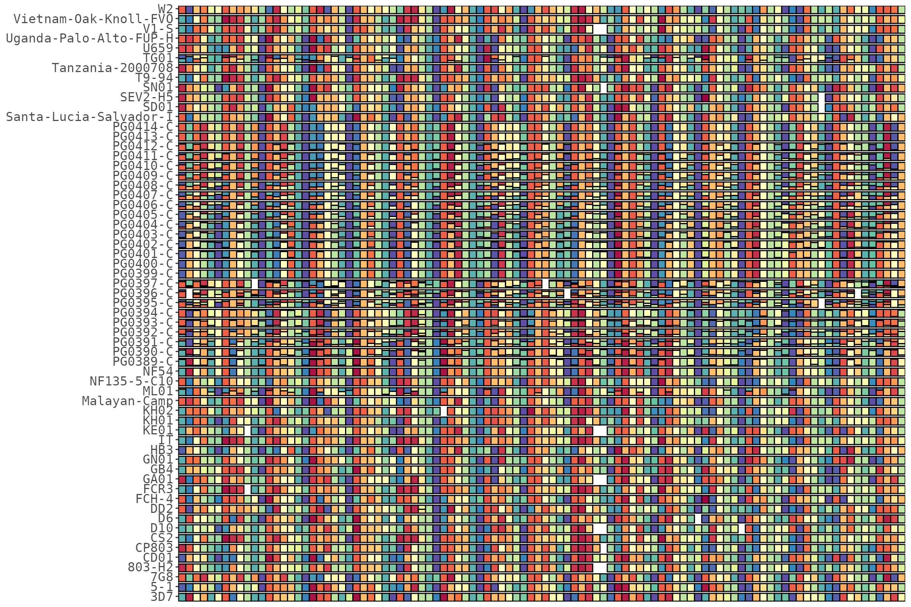
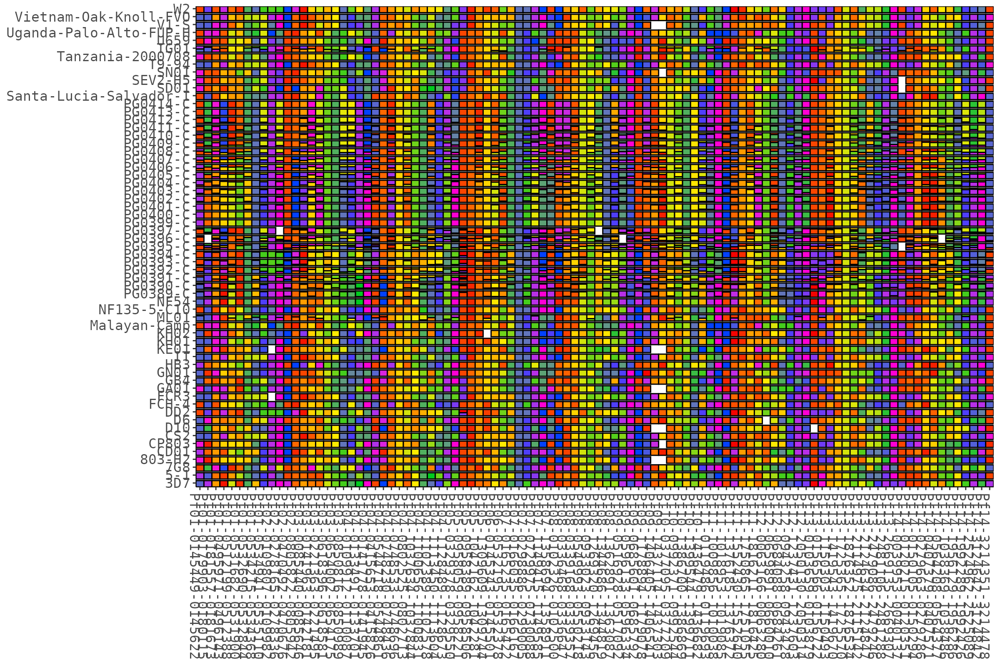
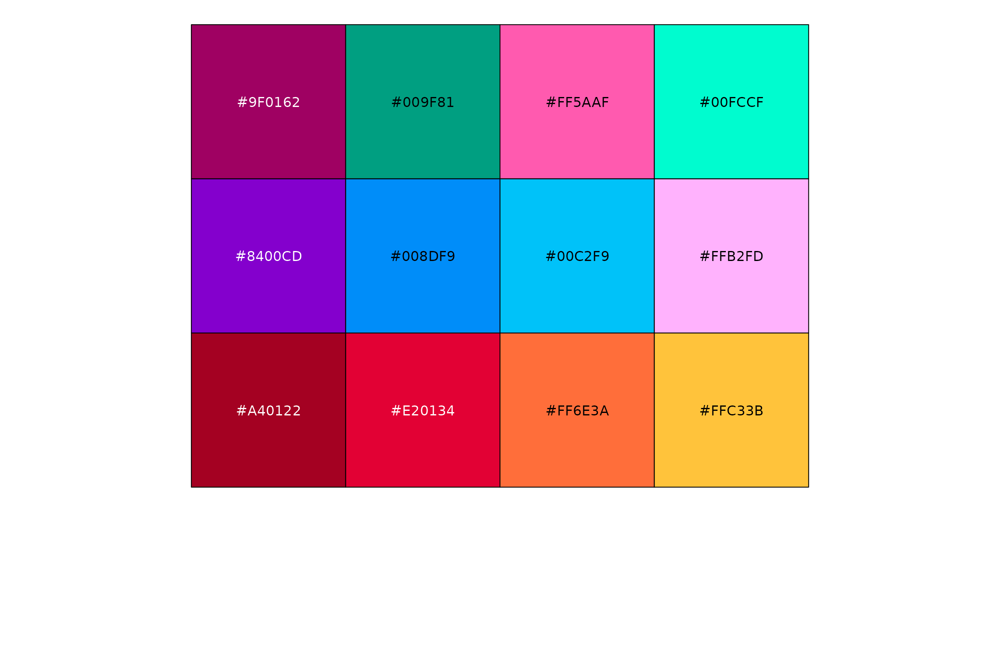
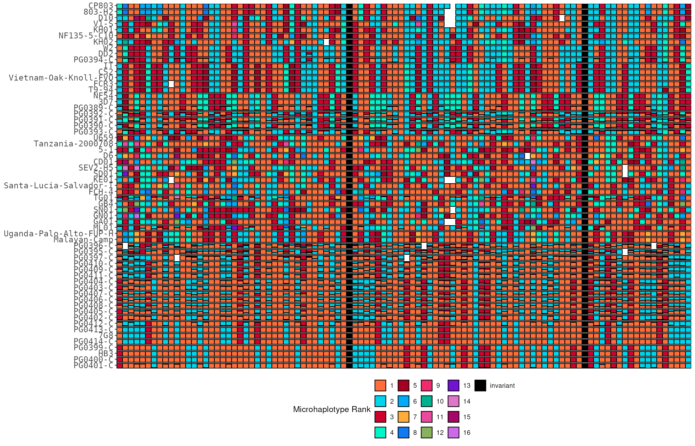
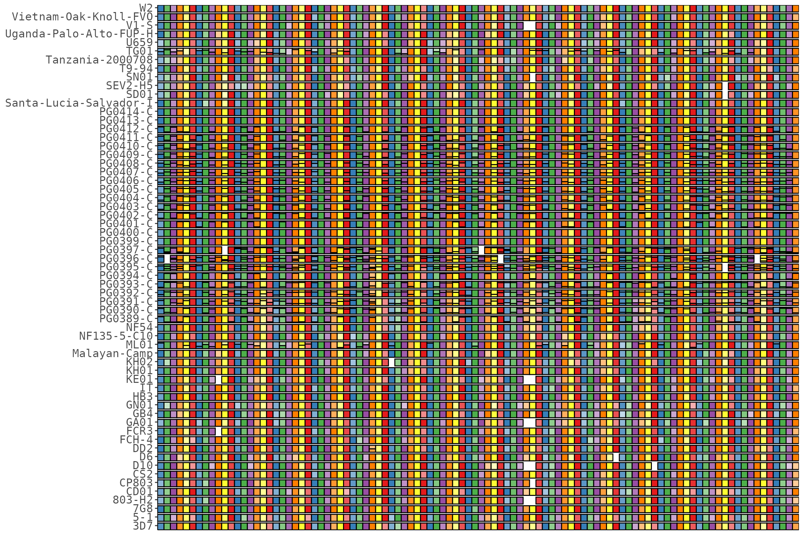
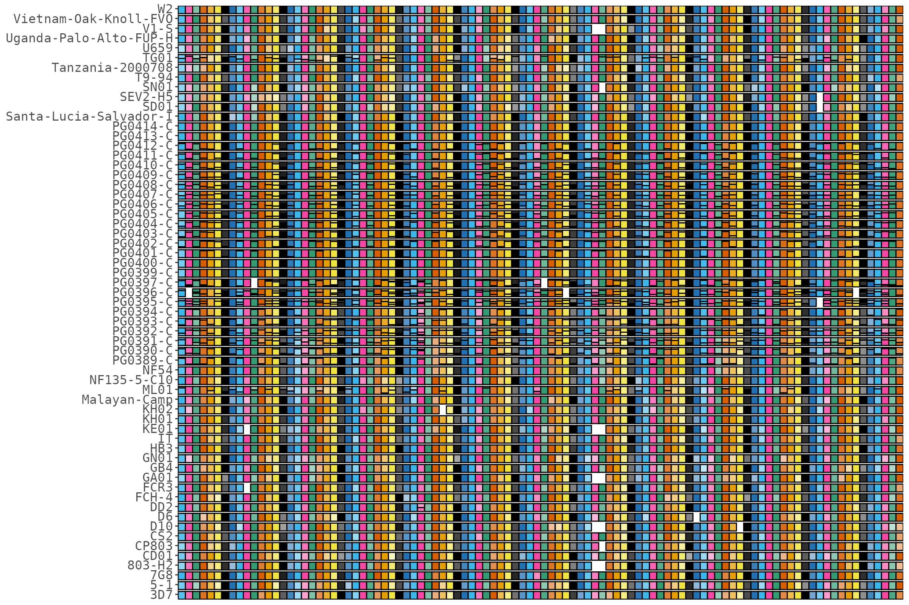

This article covers the ways to colour a rainbow plot: the rotating gradient and its period, custom ramps, the shipped colour-blind palettes, discrete rank colours (the “boring” fixed-colour mode), and shade plots.
library(HaplotypeRainbows)
library(ggplot2)
data("pfisolateExample")
rb <- HaplotypeRainbow$new(
pfIsosHeomeV1,
sample_col = "s_Sample",
target_col = "p_name",
popuid_col = "h_popUID",
rel_abund_col = "c_AveragedFrac"
)
rb$prep(sort = "population_rank")The rainbow gradient
By default the dominant haplotype’s hue rotates across targets with a
period (color_period, default 11), which
is what produces the “rainbow”. A shorter period cycles the colours
faster:
rb$prep(sort = "population_rank", color_period = 6)
rb$plot(x_axis_labels = FALSE)
Supply your own ramp with colors (its length should
match color_period):
rb$plot(colors = c("#F50300", "#FF6E00", "#FFEB01", "#00CA1E", "#0241FE", "#FE00D4"))
The fill can be driven by either colour column from the prep — log-spaced (default) or linear hue:
rb$plot(color_col = "popidFracLogColor") # default (log-spaced hue)
rb$plot(color_col = "popidFracRegColor") # linear hueColour-blind-friendly palettes
The package ships three categorical palettes
(colorPalette_08, colorPalette_12,
colorPalette_15) used by the metadata sidebars and
available for your own use:
scales::show_col(colorPalette_12)
Discrete rank colours (the “boring” plot)
plot(rank_colors = TRUE) colours haplotypes by a
discrete rank with a legend, so the most abundant
haplotype (rank 1) is the same colour in every target — a flat,
easy-to-read alternative to the gradient.
When there are more ranks than palette colours, a ramp is
interpolated from the palette (dropping white/black, ordering by hue,
then reordering so consecutive ranks stay distinct — the abundant ranks
1, 2, 3 won’t come out near-identical). Prep with
mark_invariant = TRUE to give single-haplotype (invariant)
targets their own colour (black by default).
rb$prep(sort = "population_rank", mark_invariant = TRUE)$sort_by_clustering()
rb$plot(rank_colors = TRUE, x_axis_labels = FALSE)
get_rank_colors() returns the rank -> colour map
(e.g. to reuse elsewhere); pass a different rank_palette to
plot() / get_rank_colors() to change it:
head(rb$get_rank_colors(), 5)
#> 1 2 3 4 5
#> "#FF6E3A" "#00D5EB" "#D1012F" "#00F5C9" "#A40122"Shade plots
Instead of a rotating rainbow, prep_shade() colours each
target with shades of a per-target base colour.
plot() then uses the shade colours automatically:
rb$prep_shade(min_pop_size = 1)
rb$plot(x_axis_labels = FALSE)
Pass your own base colours (each target cycles through these, then shades within):
rb$prep_shade(base_colors = colorPalette_08)
rb$plot(x_axis_labels = FALSE)